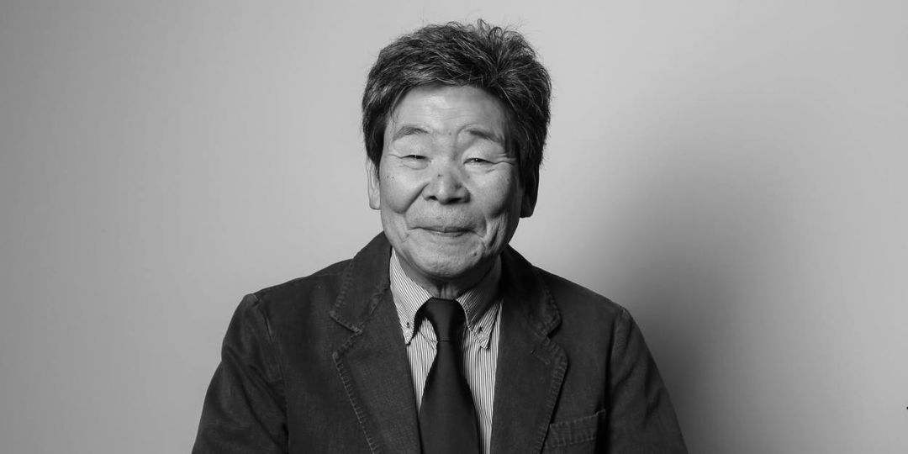
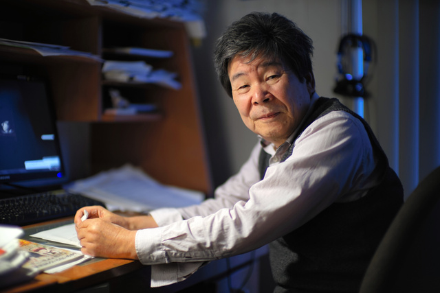
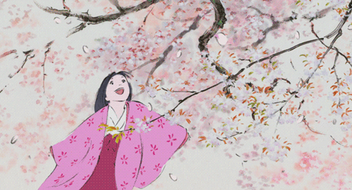
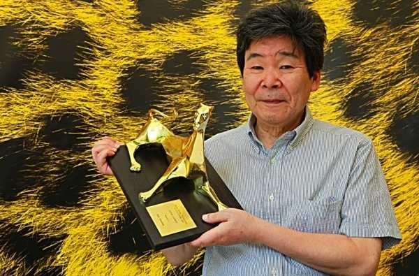

Studio Ghibli |
Intro Video

高田勋（左）

个人的兴趣是读书和音乐鉴赏。喜好的作家有宫泽贤治、法国诗人贾克·普维，并在2004～2006年期间亲自翻译贾克·普维的诗集《Paroles》等其它作品的日文译本。在对于乐理拥有一定程度的理解，于久石让在为宫崎骏制作《风之谷》、《魔女宅急便》等作品配乐时，便与他数次讨论关于处理配乐的事情。之后在2013年执导的《辉夜姬物语》中也亲自创作数首插入歌。欣赏的画家则有岩崎知弘，他对于岩崎知弘所创作儿童绘本《下雨天一个人在家》（あめのひのおるすばん）书中气氛的拿捏有着深刻印象。
在面对作品完工进度的态度上则较为消极，常有制作进度落后的情况出现，因而曾被宫崎骏在《回忆点点滴滴》的记者会资料上戏称是“树懒的子孙”（大ナマケモノの子孫）。严重的一次是在执导新潮社的《萤火虫之墓》时，让对方首次推出的动画是在部分画面未完工的情况下上映。当自己是否处在导演的立场时会有不同思维，与他长期共事的铃木敏夫表示过“若高畑勋在担任影片的制作人时可以把预算控制得很好，但如果是担任影片的导演就会把预算给花到精光”，以及“姑且不管高畑勋在影片制作人方面作得多出色，一当他成为导演时就常把与他合作的影片制作人给弄到受不了”。
统整事物上有着擅长整理资料、制作笔记的能力。过去在答应接下铃木敏夫请求担任《风之谷》影片制作人一事之前，曾秀出一整本记录有关制作人工作要点的笔记向铃木敏夫说明“我不适合当制作人”的原因。之后在执导《回忆点点滴滴》时，因片中有出现采集红花场景的缘故，便整理出一套能详细说明该如何采集红花、制作红花花饼的手册。
平时善于构思各种想法来说理争论。曾有花费了三个小时的时间，来向铃木敏夫说明为何《阿尔卑斯山的少女》与《小麻烦千惠》两者对他而言内涵上是相同动画的缘故。也在拍摄《萤火虫之墓》期间因进度严重落后时，引用了法国动画导演保罗·葛林莫在制作《斜眼暴君》中所遭遇到的状况，来解释为何应该让《萤火虫之墓》延期上映。
政治倾向方面是支持左派的日本共产党，有与作曲家池边晋一郎及漫画家高口里纯等人公开表态过。在2013年日本首相安倍晋三计划针对宪法第九条的内容做出修改时，有和宫崎骏等人在当年7月吉卜力的刊物《热风》上撰文批评。
不同于伙伴宫崎骏会把内心情感投入到自己所创作角色的情况，表现上不会让观众在欣赏影片时把自己想像成是剧中角色，而是让观众像第三者般去试着了解角色。剧情手法上较偏向客观，不会过于理想化的方式，并避免让观众产生悲观。
制作动画上不像宫崎骏拥有能够绘制出精美分镜图的技术，个人仅会绘制简单的构图，因此是透过下指示让其他动画师完成画面为主。向动画师给予指示时，会设法交代出具体让人易理解的条件，而非解读上会有模拟两可情况的要求内容。
画面上会尝试采用各种不同手法来挑战，如《回忆点点滴滴》里角色在喜怒哀乐时的面部轮廓表现。在《我的邻居山田君》跟《辉夜姬物语》中，则采用类似写生、淡描的风格来绘制，企图单纯透过线条在画面上的表现，来呈现出角色栩栩如生的模样。其中《辉夜姬物语》有舍弃一般动画常采用的先把角色和背景分开绘制，然后再合并画面的方法；而是改让角色和背景在同一张图上作画，以达到精细的表现效果。

安寿与厨子王丸（1961年）：导演助手
小王子与八头龙（1963年）：导演助手
狼少年（1964～1965年）：第14、19、24、32、38、45、51、58、66、72、80集执导
怪怪怪的鬼太郎第一期（1969年）：第62集执导
了不起的太郎（もーれつア太郎、1970年）：第44、51、59、71、77、90集执导
怪怪怪的鬼太郎第二期（1971年）：第5集执导
阿帕契棒球队（アパッチ野球軍、1971年）：第12、14、17集执导
鲁邦三世（1971年）：执导
赤胴铃之助（1972～1973年）：代理导演
阿尔卑斯山的少女（1974、1975、1979年）：执导
佛兰德斯的狗（1975年）：第15集分镜图
三千里寻母记（1976、1980年）：执导
顽皮熊（1977年）：分镜图
阿尔卑斯山音乐少女南蒂的奇妙故事（アルプスの音楽少女 ネッティのふしぎな物語、1977年）：分镜图
佩琳物语（1978年）：第3、6集分镜图
未来少年柯南（1978年）：第9、10集执导，第7、13、20集分镜图
红发安妮（1979年）：执导、剧本
小麻烦千惠（1981～1983年）：以“武元哲”的名义执导
铁的物语（鉄ものがたり、1962年）：导演助手、制作助理
太阳王子 霍尔斯的大冒险（1968年）：导演
熊猫家族（1972年）：导演
熊猫家族 雨中的马戏团（1973年）：导演
小麻烦千惠剧场版（1981年）：导演、剧本
大提琴手高修（1982年）：导演、剧本
风之谷（1984年）：制作人
天空之城（1986年）：制作人
萤火虫之墓（1988年）：导演、剧本
魔女宅急便（1989年）：音乐编导
回忆点点滴滴（1991年）：导演、剧本
平成狸合战（1994年）：导演、原作、剧本
我的邻居山田君（1999年）：导演、剧本
冬之日（2003年）：与尤里·诺里斯金、川本喜八郎等一共36名动画制作者合力协作
辉夜姬物语（2013年）：导演、剧本、原案
红海龟（2016年）：美术监制
玛丽与魔女之花（2017年）：特别致谢
柳川堀割物语（1987年）：导演、剧本
岩崎知弘～27岁的旅行（2012年）：本人演出
梦与疯狂的王国（2013年）：本人演出
暗黑街最大决斗（暗黒街最大の決闘、1963年）：助理导演
动画日文字幕翻译
种树的牧羊人（原1987年加拿大法语动画）
国王与小鸟（原1980年法国动画）
叽哩咕与魔女（原1998年法国动画）
疯狂约会美丽都（原2003年法国动画）
一千零二夜（原2006年法国动画）
至爱（原2006年俄罗斯动画）
妈妈，早安（かあさんおはよう）：作词（《三千里寻母记》片尾曲）
爱是花，你是那种子：英语歌词翻译（《回忆点点滴滴》片尾曲）
樱桃成熟时：法语歌词翻译（《红猪》插入歌）
Que Sera, Sera：改编日语版歌词（《我的邻居山田君》插入歌）
童谣（わらべ唄）：作词、作曲（《辉夜姬物语》插入歌）
天女之歌（天女の歌）：作词、作曲（《辉夜姬物语》插入歌）

太阳王子霍尔斯的电影表现（ホルスの映像表現、1983年）
故事中的故事─映像诗的世界（話の話―映像詩の世界、1984年）
电影制作的方法 1955～1991（映画を作りながら考えたこと 1955～1991、1991年）
电影制作的方法Ⅱ 1991～1999（映画を作りながら考えたことⅡ 1991～1999、1999年）
十二世纪的动画─从典藏绘作里发现能成为电影及动画的灵感（十二世紀のアニメーション―国宝絵巻物に見る映画的・アニメ的なるもの、1999年）
漫画电影志─《斜眼暴君》和《国王与小鸟》（漫画映画の志―「やぶにらみの暴君」と「王と鳥」、2007年）
来自一幅画（一枚の絵から、2009年）
动画中的偶然（アニメーション、折りにふれて、2013年）
如果你不想要战争（君が戦争を欲しないならば、2015年）
动画世界 蜻蜓的读本（アニメの世界 とんぼの本、1988年）：与宫崎骏、铃木伸一、おかだえみこ合著。
国王与小鸟 吉卜力的原点（王と鳥 スタジオジブリの原点、2006年）：与大冢康生、叶精二、藤本一勇合著。
梦幻的作品《长袜子皮皮》（幻の「長くつ下のピッピ」、2014年）：与宫崎骏、小田部羊一合著。
2 种树的男人（1990年）：让·纪沃诺原著。
叽哩咕与魔女（2003年）：米歇尔·欧斯洛原著。
千言万语（2004年）：贾克·普维原著。
给予鸟的问候（2006年）：贾克·普维原著。

紫绶褒章（1998年[83]）
Ordre des Arts et des Lettres Officier ribbon.svg 艺术与文学军官勋章（法国文化部，2015年4月7日于东京颁发）
1991年第12届山路文子文化财团特别奖授予
2007年第12届动画神户：特别奖
2009年罗加诺国际影展：金豹奖
2014年东京动画奖：特别奖
2014年安锡国际动画影展：名誉奖
2015年安妮奖：温瑟·麦凯奖
Studio Ghibli | Intro Video
生平
早年
于1935年10月29日出生于日本三重县伊势市，为7兄弟当中的老幺。父亲高畑浅次郎在二次大战期间曾在冈山县的冈山一中担任校长，战后则就任过该县的教育长。 小时因父亲要担任校长一事缘故前往冈山县居住，便有在1945年初夏遭遇到美军轰炸该处一带的冈山大空袭经历。 青年期间高畑勋前往东京就读东京大学文学部法文科，之后因在戏院观赏到由法国动画导演保罗·葛林莫创作的动画《斜眼暴君》（La Bergère et le ramoneur）时大受感动，便决定从事动画界的工作。东映动画时期
1959年从东京大学毕业后，高畑勋选择加入东映动画公司。起初有在《安寿与厨子王丸》、《小王子与八头龙》等作品担任导演助手，之后在《狼少年》里开始有接任执导方面事务的经历。 此期间高畑勋结识了往后与他有长期合作关系的公司后辈宫崎骏，当时高畑勋与宫崎骏分别各担任了东映动画公会的副委员长与书记长。太阳王子霍尔斯
高畑勋首部执导的长篇电影动画，是与宫崎骏、大冢康生、原彻等人合作于1965年上映的《太阳王子 霍尔斯的大冒险》，为一部以当时国际社会因越战局势而兴起的各种动荡不安社会气氛为题材之作品。 该影片虽然让伙伴宫崎骏认为是部足以影响大众感官的作品，但因票房并未特别亮眼，且高畑勋在执导此片时有严重进度落后的情况，而被东映动画降格成执导助手，直到东映动画制作《怪怪怪的鬼太郎》第二期电视动画时才将他升格在一些集数里执导。离任东映动画
《太阳王子 霍尔斯的大冒险》上映3年后，当时人在A Production动画公司的大冢康生，向高畑勋提出将瑞典小说家阿斯特丽德·林格伦之著作《长袜子皮皮》改编为动画的邀约，之后高畑勋便带着宫崎骏与小田部羊一一同离开东映动画。 之后因阿斯特丽德·林格伦不允许授权改编造成企划取消，高畑勋便担任A Production下《鲁邦三世》第一期电视动画的导演。当时鲁邦三世电视动画前几集的导演为大隅正秋，内容上偏向充斥着裸露及暴力动作，随后高畑勋接任时便将作品修改为普级的风格，而当时高畑勋是以“A Pro导演团队”（Aプロ演出グループ）的名义担任导演。 在1972年3月期间结束《鲁邦三世》的电视动画后，年底高畑勋与宫崎骏合作推出了电影动画《熊猫家族》，并在隔年发表了该作品续作《熊猫家族 雨中的马戏团》。在《熊猫家族》中，高畑勋与宫崎骏也改编了一些当时没机会用在《长袜子皮皮》上的灵感。日本动画公司‧Telecom时期
1973年高畑勋与宫崎骏、小田部羊一三人转职到日本动画公司旗下，一同参与以改编世界名著为电视动画的《世界名作剧场》系列。当时高畑勋接手了将约翰娜·施皮里小说《海蒂》所改编成的《阿尔卑斯山的少女》。该作品公开后获得了成功，全部52集数里有平均近27%的收视率。之后高畑勋相继执导了《三千里寻母记》、《红发安妮》等同由小说所改编电视动画作品。 制作完《红发安妮》后，高畑勋前往Telecom动画公司将漫画家春木悦巳所创作带有大阪人情物风格的作品《小麻烦千惠》改编成电影动画。《小麻烦千惠》的电影动画在1981年上映后，高畑勋在当年继续接手替《小麻烦千惠》制作电视版系列动画片。此期间高畑勋认识了当时要替动漫杂志《Animage》编写内容而找他访谈，往后成为他长期合作伙伴的铃木敏夫。高畑勋之后有在与铃木敏夫多次会谈过程中取得启发，修改了《小麻烦千惠》电影动画版的剧情走向。 1982年高畑勋在Oh! Production动画公司推出了改编自宫泽贤治小说《大提琴手高修》的同名电影动画。同一年里宫崎骏因创作理念上的问题，退出了Telecom原先与美国一方动画师合作，将温瑟·麦凯的漫画《小尼莫》改编为电影动画的方案，到了隔年高畑勋也因同样缘故选择了退出。风之谷
1983年宫崎骏开始进行制作电影动画《风之谷》时，高畑勋在铃木敏夫的游说下，替宫崎骏担任该作品的制作人。之后和宫崎骏向先前曾在《太阳王子 霍尔斯的大冒险》一同合作过的原彻请求协助，将对方所创立动画室Topcraft借用为制作《风之谷》的场地。 《风之谷》上映后，高畑勋与宫崎骏等人讨论打算将该影片赚取的资金用来拍摄以福冈县柳川市一带运河为背景的纪录片《柳川堀割物语》。不过因在拍摄时高畑勋便已将资金耗尽，铃木敏夫便请宫崎骏拍摄动画《天空之城》来赚取费用。吉卜力工作室时期
为了能有方便制作新动画《天空之城》的地点，随后铃木敏夫与德间书店讨论，成立了专门让高畑勋、宫崎骏使用的制作动画场所“吉卜力工作室”。其中高畑勋在吉卜力成立时虽然给予许多建议和协助，但他个人始终不把自己列为此工作室的正式成员，而是以类似顾问的身份进出吉卜力。 在吉卜力期间里头，高畑勋首部参与作品是担任《天空之城》的制作人，而他首部执导的吉卜力动画，是于1988年所推出改编自野坂昭如同名小说的《萤火虫之墓》。 高畑勋于1991年推出的《回忆点点滴滴》在票房上获得了31亿日圆左右成绩，是当年度日本国产电影的首位。之后1994年的《平成狸合战》则达到44亿日圆，除同为该年度日本国产电影的第一名，也击败当年假想敌动画作品《狮子王》的在日票房34亿。但到了1999年的《我的邻居山田君》仅有15多亿日圆，是吉卜力自1989年《魔女宅急便》后票房最差的作品。 自《我的邻居山田君》后一段时期高畑勋未再有执导其它作品，此期间高畑勋另翻译了一些国外动画名作如《叽哩咕与魔女》、《疯狂约会美丽都》等等制成日文版交由吉卜力发行。 2005年高畑勋开始有想将日本古老传说《竹取物语》拍摄为动画的念头，之后2008年高畑勋与西村义明合作开始计划推出此故事的改编动画《辉夜姬物语》。该作品以超出50亿日圆的制作费规格投入，在历经约8年时间后于2013年年底上映。 结束了《辉夜姬物语》后，当时吉卜力另与荷兰动画导演麦可·度德威特以及其它数间法国动画室合力创作《红海龟》动画，高畑勋有出面为麦可·度德威特担任片中美术方面的监制。离世
2009年期间因健康方面的缘故，高畑勋在宫崎骏与铃木敏夫的劝说下，开始进行戒烟。2017年4月里动过手术后，高畑勋身体状况开始出现恶化。 到了2018年2月在身体不适的情形下，高畑勋仍有出席参加演讲活动。3月底入院治疗时，已有呼吸困难无法发声的状况。4月5日凌晨1时45分高畑勋因肺癌在东京的帝京大学医学部附属医院去世，享寿82岁。 离世后吉卜力工作室在5月15日于吉卜力美术馆举行了高畑勋的追悼会，当天除了他过去于动画界的长期盟友宫崎骏、铃木敏夫、大冢康生、小田部羊一在场外，共来了久石让、押井守、富野由悠季、麦可·度德威特等上千人为他送别。高畑勋生前一直未能有机会将日本古物语《平家物语》改编成动画一事，则被铃木敏夫提及是最遗憾的地方。
高田勋（左）
个人
性格
高畑勋的个人昵称为“阿朴”（パクさん），源自于他年轻时在动画室上班快迟到进来后，忙着大口咀嚼（パクパク）面包的模样。个人的兴趣是读书和音乐鉴赏。喜好的作家有宫泽贤治、法国诗人贾克·普维，并在2004～2006年期间亲自翻译贾克·普维的诗集《Paroles》等其它作品的日文译本。在对于乐理拥有一定程度的理解，于久石让在为宫崎骏制作《风之谷》、《魔女宅急便》等作品配乐时，便与他数次讨论关于处理配乐的事情。之后在2013年执导的《辉夜姬物语》中也亲自创作数首插入歌。欣赏的画家则有岩崎知弘，他对于岩崎知弘所创作儿童绘本《下雨天一个人在家》（あめのひのおるすばん）书中气氛的拿捏有着深刻印象。
在面对作品完工进度的态度上则较为消极，常有制作进度落后的情况出现，因而曾被宫崎骏在《回忆点点滴滴》的记者会资料上戏称是“树懒的子孙”（大ナマケモノの子孫）。严重的一次是在执导新潮社的《萤火虫之墓》时，让对方首次推出的动画是在部分画面未完工的情况下上映。当自己是否处在导演的立场时会有不同思维，与他长期共事的铃木敏夫表示过“若高畑勋在担任影片的制作人时可以把预算控制得很好，但如果是担任影片的导演就会把预算给花到精光”，以及“姑且不管高畑勋在影片制作人方面作得多出色，一当他成为导演时就常把与他合作的影片制作人给弄到受不了”。
统整事物上有着擅长整理资料、制作笔记的能力。过去在答应接下铃木敏夫请求担任《风之谷》影片制作人一事之前，曾秀出一整本记录有关制作人工作要点的笔记向铃木敏夫说明“我不适合当制作人”的原因。之后在执导《回忆点点滴滴》时，因片中有出现采集红花场景的缘故，便整理出一套能详细说明该如何采集红花、制作红花花饼的手册。
平时善于构思各种想法来说理争论。曾有花费了三个小时的时间，来向铃木敏夫说明为何《阿尔卑斯山的少女》与《小麻烦千惠》两者对他而言内涵上是相同动画的缘故。也在拍摄《萤火虫之墓》期间因进度严重落后时，引用了法国动画导演保罗·葛林莫在制作《斜眼暴君》中所遭遇到的状况，来解释为何应该让《萤火虫之墓》延期上映。
政治倾向方面是支持左派的日本共产党，有与作曲家池边晋一郎及漫画家高口里纯等人公开表态过。在2013年日本首相安倍晋三计划针对宪法第九条的内容做出修改时，有和宫崎骏等人在当年7月吉卜力的刊物《热风》上撰文批评。
行事
作品的风格上讲究符合现实的描写，如《萤火虫之墓》里B-29轰炸机在天空中飞行的方向，或是《阿尔卑斯山的少女》里出现的面包等等，都有下过考察功夫。其中高畑勋当时为了让《阿尔卑斯山的少女》的场面表现自然，而实际走访了动画原作小说的舞台瑞士，这种前往实地考察的方式是当时日本动画业界里少见的。不同于伙伴宫崎骏会把内心情感投入到自己所创作角色的情况，表现上不会让观众在欣赏影片时把自己想像成是剧中角色，而是让观众像第三者般去试着了解角色。剧情手法上较偏向客观，不会过于理想化的方式，并避免让观众产生悲观。
制作动画上不像宫崎骏拥有能够绘制出精美分镜图的技术，个人仅会绘制简单的构图，因此是透过下指示让其他动画师完成画面为主。向动画师给予指示时，会设法交代出具体让人易理解的条件，而非解读上会有模拟两可情况的要求内容。
画面上会尝试采用各种不同手法来挑战，如《回忆点点滴滴》里角色在喜怒哀乐时的面部轮廓表现。在《我的邻居山田君》跟《辉夜姬物语》中，则采用类似写生、淡描的风格来绘制，企图单纯透过线条在画面上的表现，来呈现出角色栩栩如生的模样。其中《辉夜姬物语》有舍弃一般动画常采用的先把角色和背景分开绘制，然后再合并画面的方法；而是改让角色和背景在同一张图上作画，以达到精细的表现效果。
参与作品
电视动画
动画电影
纪录片
真人电影
作词．作曲
著书
个人著作
合著
2
翻译书籍
荣誉
日本勋章奖章
外国勋章奖章
奖项
Studio Ghibli | Intro Video